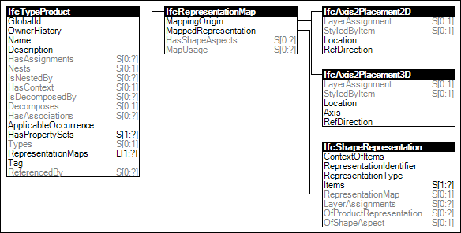

Link to this page
Link to this pageProduct types may have representations indicating shape representation for geometry, clearance, or other concepts.
The shape representation attached to a type is defined using the relationship RepresentationMaps of data type IfcRepresentationMap. It provides the means to store several representation maps for different purposes. In order to utilze the representation map at each occurrence of the product type, the product occurrence has to use the concept 'Mapped Geometry'.
NOTE See IfcTypeProduct for further information and figures explaning the concepts 'Product Type Representation' and 'Mapped Geometry'.
Figure 91 illustrates an instance diagram.
 |
Figure 91 — Product Type Geometric Representation |